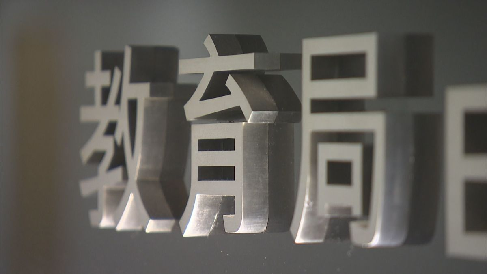
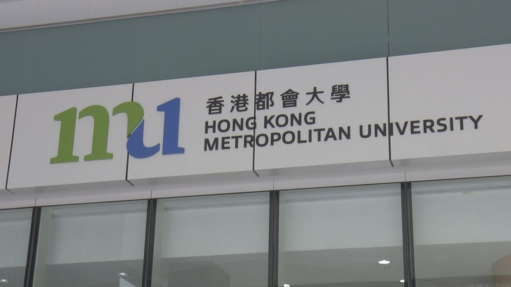
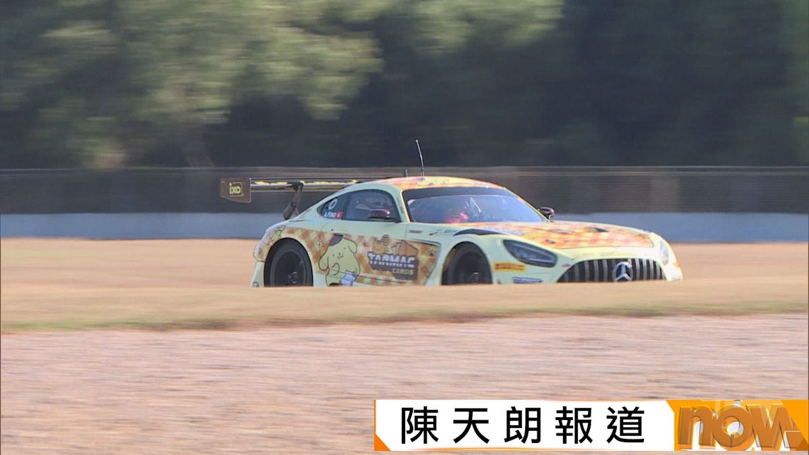
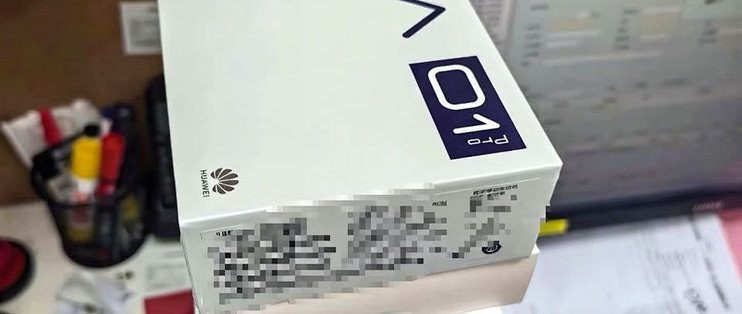
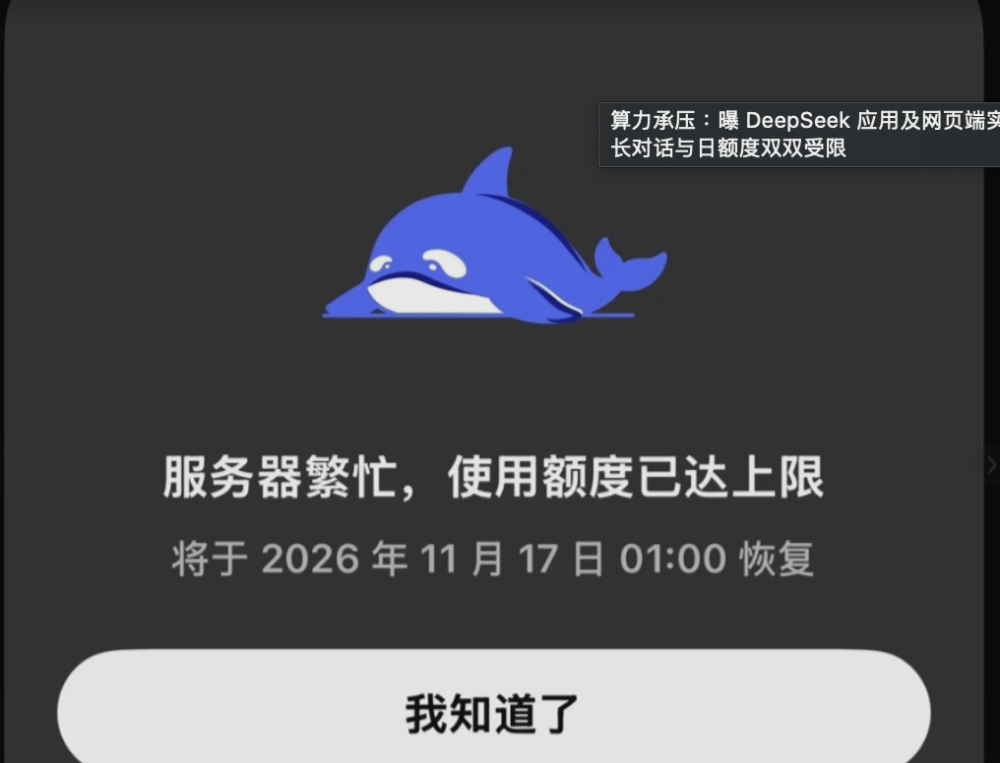
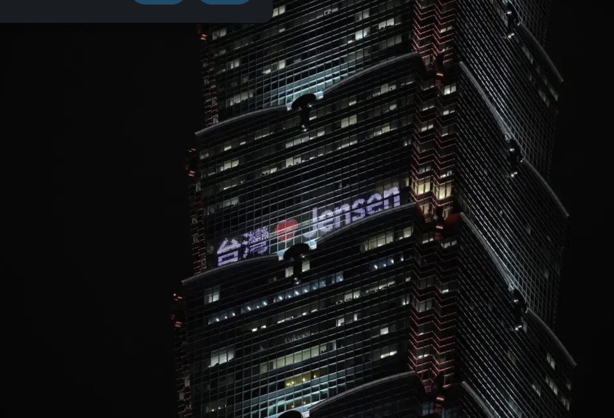
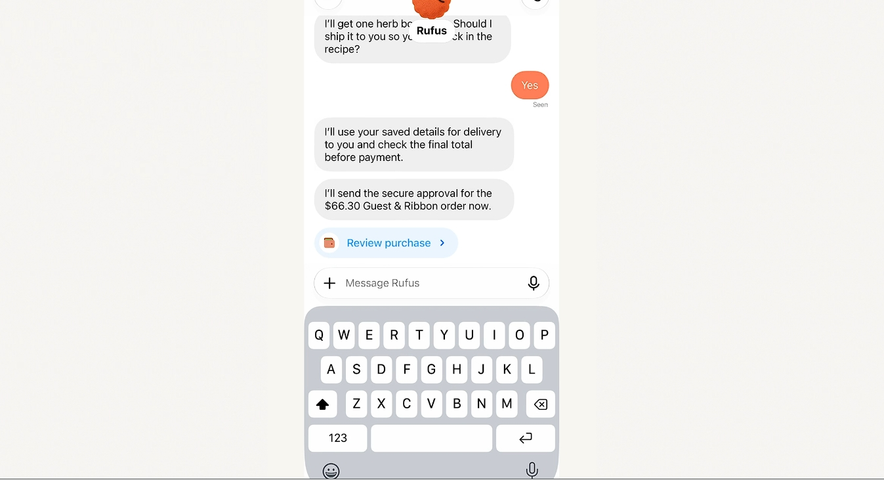
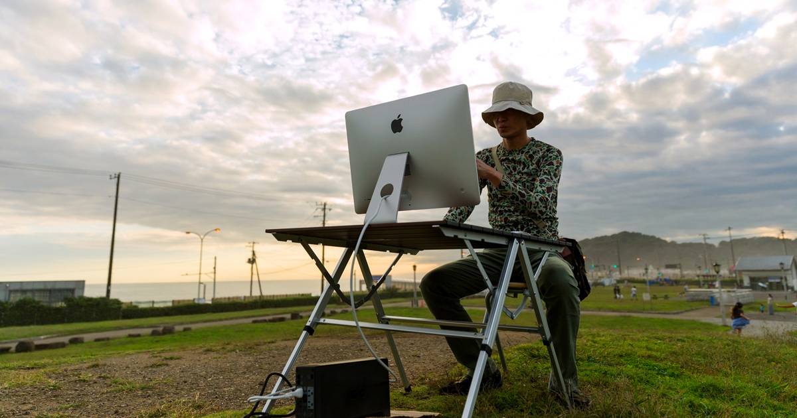

📰
焦點新聞 - Google 新聞
焦點新聞 - Google 新聞
美國商務部出新規：禁第三國數據中心向華企提供遠程算力
美國商務部周一宣布收緊先進AI晶片出口管制，海外數據中心若向總部設於中國內地或澳門的企業提供大量先進運算能力，須先取得美國出口許可，防止中企繞過現有限制。星馬泰、印尼及巴西被列為高轉運風險地區。
美股受晶片出口新規及英偉達人事風波拖累急挫，納指跌2.5%；深圳APEC峰會明日登場，中美俄元首周四歷史性會晤；港股逆市升116點，但新世界供股後急瀉四成。
美國商務部周一宣布收緊先進AI晶片出口管制，海外數據中心若向總部設於中國內地或澳門的企業提供大量先進運算能力，須先取得美國出口許可，防止中企繞過現有限制。星馬泰、印尼及巴西被列為高轉運風險地區。
APEC領導人非正式會議將於11月18至19日在深圳舉行，中方確認習近平將分別與特朗普及普京會晤；特朗普預告會談將討論無核化、伊朗及烏克蘭問題。李家超今日亦赴深圳出席相關會議。
行政長官李家超今日啟程前往深圳，出席亞太經合組織領導人非正式會議及相關活動，19日返港；期間亦會出席工商領導人峰會，與各經濟體領導人雙邊會談，推介香港優勢。
今日凌晨約1時15分，警方在彌敦道聖安德烈堂對開設路障截查期間，一輛私家車突然倒車逃走，先後撞向4輛的士，再逆線駛入山林道逃去；一名50歲的士司機頸部受傷送院，案件列作狂亂駕駛。
蔡天鳳碎屍案昨在高等法院續審，首被告鄺港傑繼續作供，指曾打算與胞弟「夾口供」指控父親鄺球殺死蔡天鳳，以為可將家庭損失減至最小；控方關注涉案14吋大湯煲，鄺稱不知父親添置用途。
澳門行政長官岑浩輝發表施政報告，宣布連續第20年派錢，合資格永久居民每人獲發1萬元，非永久居民6,000元；育兒津貼引入階梯式發放，鼓勵生育。

📰教育局歡迎再多4間內地高校參與文憑試收生計劃，參與院校增至169間，為香港學生提供更多升學選擇。

📰香港都會大學發生資料外洩事件，涉及約5,000人，資料包括姓名、地址及學費金額等，校方已跟進事件。
維港泳因水流變急、擔心場地超時而腰斬，約700名泳手受影響。
天文台預測周二最高約27度，周三晚起氣溫下降，周五及周六市區最低氣溫僅15至16度，轉季留意保暖。
德國在歐洲國家聯賽以5：0大勝傳統宿敵荷蘭，利物浦中場穫斯梅開二度，取得高普領軍以來最大勝仗，並晉級8強。
英超榜尾球隊水晶宮官方宣布，委任前賓福特及熱刺領隊法蘭克為新帥，雙方簽約至2029年，肩負帶領球隊扭轉頹勢的重任。

📰第73屆澳門格蘭披治大賽車19日起一連四日上演，兩位香港車手方駿宇與歐陽若曦由昔日競敵變成隊友，夥拍四屆冠軍晏高為平治出戰GT盃。
美股周一顯著下挫，美國收緊先進晶片出口限制，加上投資者憂慮英偉達管理層變動，AI股沽壓加劇；納指跌2.49%，標指跌1.92%，道指跌739點或1.41%，英偉達跌逾4%。
恒指昨日高開71點，最高升256點，收報23753點，升116點或0.5%。北水全日淨流出42.27億元，淨買入最多為MiniMax、騰訊及康方生物，淨賣出最多為盈富基金及阿里。
新世界發展建議以每持1股供11股、供股價0.9元集資249億元，復牌後股價急瀉近41%。市場關注供股對現有股東的攤薄影響，以及集資能否為集團爭取修復時間。
分析認為新世界是次大規模供股，目的在於換取修復資產負債表的時間；供與不供的成本計算，成為小股東目前最關心的問題。
百度第三季扭虧為盈，賺13.95億元人民幣，經調整淨利潤跌36.5%，公司料年底前宣布首次派息；小鵬上季調整淨虧損擴大至8.87億元人民幣。
港交所宣布推出離岸人民幣債券指數，是港交所首隻冠名固定收益指數，也是香港首個追蹤在港發行點心債的基準指數；今年以來離岸人民幣債券發行規模逾5,900億元。
金價上周急瀉268美元，分析指本周需關注四大焦點事件，判斷黃金「短空長多」的格局能否延續。
日經225指數周二開盤跌0.6%，報59295.80點，受金融及能源股拖累；韓國KOSPI綜合股價指數開盤跌1.8%，報5008.09點。
人民幣兌美元即期匯率收報6.6678，較上個交易日升29點子，創11月2日以來兩周新高；離岸人民幣亦升43點子，報6.6689。
美國今日公布零售銷售等數據，京東公布業績，料為周二市場焦點；另外聖路易斯聯儲總裁發表演講，英國公布失業率。
黃仁勳閃辭後，市場重新評估英偉達的投資價值；分析從管理層、技術路線及競爭格局出發，探討在沒有創辦人掌舵下，這隻AI龍頭是否仍值得押注。
陶冬認為黃仁勳離場對整個AI產業的衝擊深遠，不單是英偉達一家公司的事，更牽動算力供應鏈、AI基建投資節奏以至中美科技角力的走向。
雅居樂與一組主要境外銀行貸款人就債務重組訂立重組支持協議，邀請其他債權人加入；初始參與債權人持有上市公司香港計劃規限範圍內債務未償還本金總額約20.3%。
 阿B講股
阿B講股
恒指收報23753點，升116點，成交1741億元，北水淨流出42.2億元；表面平穩，但AI相關股份表現遠比指數差。焦點股非新世界發展莫屬，復牌急瀉四成。
黃仁勳辭職後，英偉達內外發起「Stand with Jensen」聯署，數日內突破15萬至17萬人簽名，自稱現任員工達6,000至8,000人。文章對照OpenAI Altman事件，評估黃仁勳回歸的機率。
黃仁勳因婚外情風波辭任，事件一度重挫輝達股價。文章指出單一個股的「關鍵人物風險」難以預測，分散投資才是應對突發黑天鵝的根本方法。
Apple正在為iPhone Duo測試「臉部解鎖」功能，利用前置相機進行身份驗證，已在今日發布的iOS 27.3 Beta展開測試；現時iPhone Duo僅支援Touch ID或密碼解鎖。
iPhone Duo的預計送貨日期大幅提前，由明年1月縮短至12月中，顯示供應情況有所改善。
國行版Apple Intelligence將於12月上線，iPhone 15 Pro或以上機型可用，iPhone 15則不在此列；部分功能由手機本地處理，部分轉交千問處理。
華為正式官宣新一代大摺疊旗艦Mate X8將於11月24日14:30在全場景新品發布會亮相，產品頁面已上架官網，同步公開配色與儲存配置。

📱華為全新子品牌星芒的首款手機尚未發布，「三色無充版」真機諜照已率先流出，據報砍掉三項外圍配置、留下旗艦晶片，詳情待11月20日揭曉。
OPPO Reno 17系列正式發布，由宋雨琦代言，3099元人民幣起步；同場亦發布OPPO Pad Air6，2.8K 120Hz柔光屏，國補後2209.15元人民幣起。
NAND快閃記憶體現貨價大跌約20%，美銀預計明年首季再跌5%至10%；記憶體價格波動亦令入門機型或大量採用720p OLED屏幕以控制成本。
LINE的無聲訊息功能由今天起改為付費才能使用，通話錄製、預約訊息等功能亦將於明年1月跟進收費。

📱傳DeepSeek因算力告急而限流，對話閒置7日後不再支援，另設每日限額，用戶容易遇到繁忙提示。
美國財長追問英偉達，要求10天內交代晶片有否流入中國，並促請董事會外聘新行政總裁；事件源於黃仁勳辭職後，華府內部晶片政策角力加劇。

📱據報台灣科技界集資在台北101點燈聲援黃仁勳，外牆展示「台灣♡JENSEN」字樣。
 ePrice.HK 綜合新聞
ePrice.HK 綜合新聞
三星Galaxy S27 Ultra及Pro外觀爆料更新，長焦鏡頭與閃光燈傳改用獨立圓環設計，新增紅藍兩款配色。
Google官方宣布地圖的Ask Maps新增行程規劃、已儲存清單搜尋及尋找本地商戶預約三項功能，同日起在Android和iOS推出，並擴展至歐洲30個地區。
英偉達在SC26大會正式發布Vera Rubin平台的Rubin HPC GPU，面向科學、工程與分析工作負載，單顆集成超5萬個CUDA核心，創英偉達GPU產品線紀錄，核心規模接近現有產品的兩倍。
據報黃仁勳正考慮回歸英偉達，親信已設立「戰情室」游說董事會；特朗普亦表示不介意黃仁勳重返行政總裁一職。
英偉達披露第三季13F文件，需申報的美國上市證券共8項，組合總市值約483.31億美元，按季跌約23.8%；期內減持英特爾25%，增持SpaceX約6%。
OpenAI正在擴大ChatGPT學術研究人員計劃，為全球最多20萬名研究人員提供免費使用ChatGPT的權限，下一輪申請將於11月23日開放。
美國司法部將牽頭審查DoorDash以170億美元收購Instacart的交易，評估反壟斷隱憂；此類食品零售交易通常由聯邦貿易委員會負責，今次由司法部主導令外界關注。
納斯達克新的「23/5」交易機制將於12月6日正式實施，每周5個交易日、每日開放23小時，僅在美東時間20:00至21:00保留1小時休市窗口；業界認為跨市場聯動有望升溫。
微軟監測到一場大規模釣魚攻擊，偽造Microsoft 365服務健康通知，聲稱收件人郵件將在24小時內被刪除，目的疑為竊取登入憑證；目前未證實有憑證被盜或惡意軟件投遞。
南韓今年稅務師國家考試榜首坦承利用生成式AI作弊，在4月及7月兩場考試中取得近乎滿分；醜聞令即將登場的南韓年度大學入學考試面臨更大公平性挑戰。

🤖OpenAI推出ChatGPT Wallet，讓旗下名為dots的AI代理人協助用戶決定購買商品，並代表用戶完成交易；初期僅開放予美國部分年滿18歲的ChatGPT Pro訂閱用戶。
阿里發布Qwen4-Max大模型，編程與智能體能力進一步升級。
騰訊混元發布Hy4 flash模型，激活參數12B，支援100萬上下文。

🤖DeepSeek開源自家推理框架DeepInfer，作為支撐大規模生產服務的引擎。
英偉達推出DGX Spark高效能運算開發者套件，面向研究人員、學者及開發者群體。